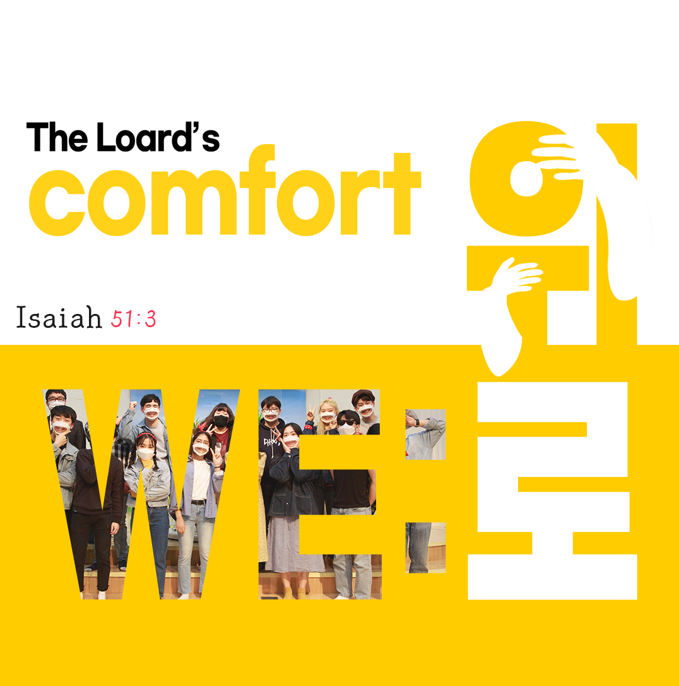

Hakik Young Adult

학익교회 청년부는
2022년 청년부 표어는 "위로, WE로"입니다.
세 가지 모토를 갖고 함께 예배드리고 연합하는 공동체입니다.

연락처 및 링크
-
학익장로교회
인천광역시 미추홀구 재넘이길123번길 45
032-868-8475 -
담당교역자 010-2935-6628
청년부회장 010-3097-9143 -
청년부 예배 채널
-
주일예배 온라인 예배 채널
-
학익교회 청년부 인스타